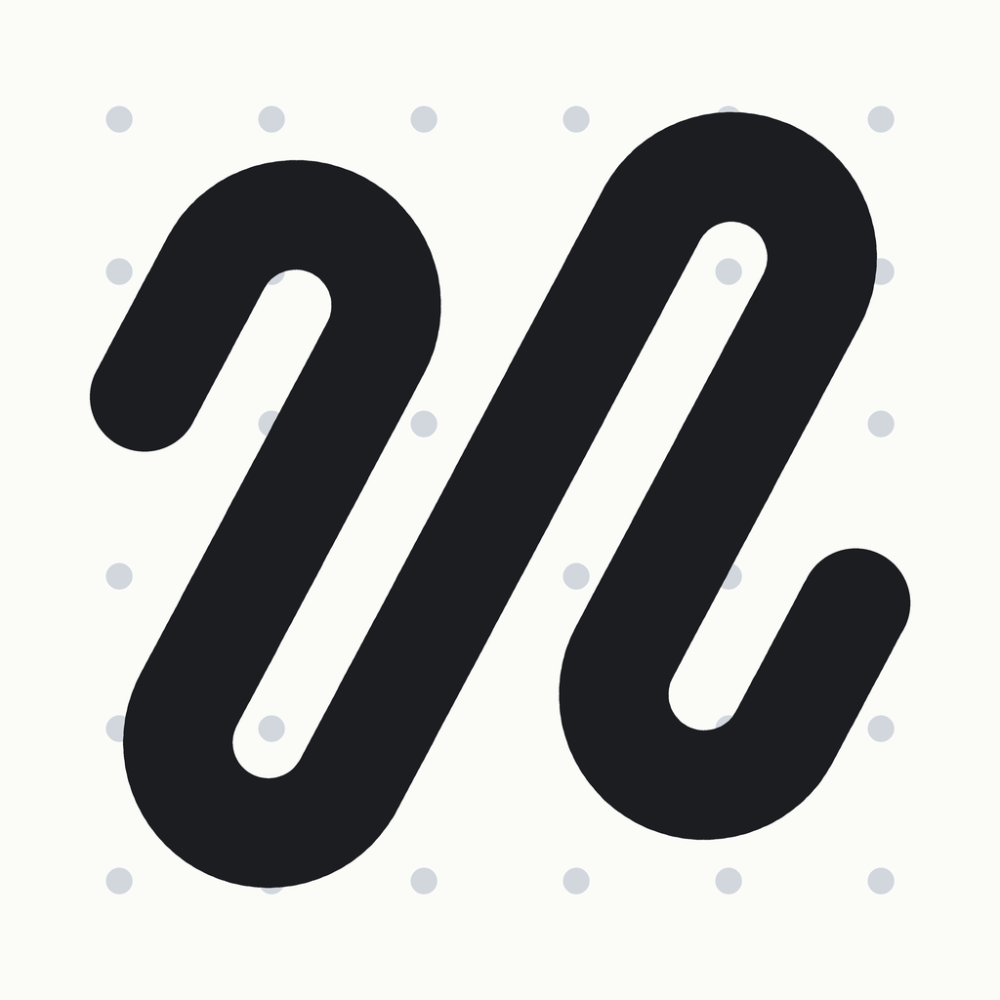

Storyline
Storyboarding for iPhone and iPad
Import drawings or photos, drag and drop them into order on dot-grid paper, write a note under each frame, and export a storyboard PDF that carries your work and nothing else.
Two and a half minutes: a board built from twelve frames, then exported.
What it does
- Takes any image — panels you drew, photographs, reference stills, scans
- Keeps every frame in the shape it arrived in; mixed ratios on one board are normal
- A note under each frame, with bold, italic and underline
- Exports a landscape A4 contact sheet at 1, 4, 6 or 12 frames per page
- Moves a whole board between devices as a single file
- No account, no sign-in, and nothing stored anywhere but your device